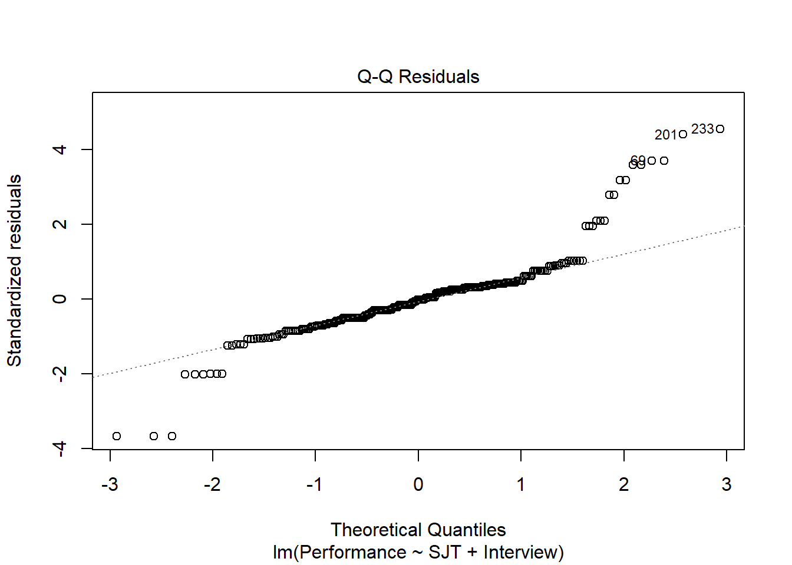

Chapter 40 Applying a Compensatory Approach to Selection Decisions Using Multiple Linear Regression
In this chapter, we will learn how to apply a compensatory approach to making selection decisions by using multiple linear regression. Well begin with a conceptual overview of the compensatory approach, and well conclude with a tutorial.
40.1 Conceptual Overview
Just as we can use multiple linear regression to evaluate whether evidence of incremental validity exists for a selection tool, we can also use multiple linear regression to apply a compensatory approach to making selection decisions. In general, there are three overarching (and mutually non-exclusive) approaches to making selection decisions: (a) compensatory (e.g., multiple linear regression), (b) noncompensatory (e.g., multiple-cutoff), and (c) multiple-hurdle. These three approaches can be mixed and matched to fit the selection-decision needs of an organization; however, in this chapter, well focus specifically on the compensatory approach, whereas in the next chapter, we will focus on the multiple-cutoff noncompensatory approach.
40.1.1 Review of Multiple Linear Regression
This chapter is an extension of the chapter on estimating the incremental validity of a selection tool using multiple linear regression. Thus, in this chapter, I will forgo a review of ordinary least squares (OLS) multiple linear regression, as that is already covered in the previous chapter, along with a discussion of statistical assumptions, statistical significance, and a sample write-up.
40.1.2 Review of Compensatory Approach
In the context of employee selection, a compensatory approach refers to the process of using applicants scores on multiple selection tools to predict who will have the highest scores on the criterion. In doing so, applicants can compensate for lower scores on one selection tool with higher scores on one or more other selection tools hence the name compensatory approach. One of the simpler ways to apply a compensatory approach is to apply equal weights to scores from the various selection tools when predicting future criterion scores; however, such an approach does not acknowledge that some selection tools may explain more variance in the criterion (e.g., job performance) than others. Using regression coefficients from a multiple linear regression model, we can weight scores on selection tools differentially when predicting criterion scores. Notably, these weights are empirically driven (e.g., data informed) as opposed to judgment informed (e.g., subject matter expert ratings). In essence, applying a compensatory approach using multiple linear regression allows us to apply our estimated regression model equation to predict criterion scores for applicants. Subsequently, we can sort the predicted criterion scores to determine which applicants are most promising and to inform selection decisions.
To understand how a compensatory approach works, lets consider a hypothetical scenario in which we administer three selection tools to applicants: cognitive ability test (CA), work simulation (WS), and structured interview (SI). Lets assume that a predictive validation study was conducted previously to estimate the criterion-related validities of these three selection tools and whether they each showed evidence of incremental validity with respect to each other and lets imagine that our criterion of interest is job performance. Finally lets assume that the following equation represents the general framework for the multiple linear regression model we estimated for investigating incremental validity:
\(\hat{Y}_{Performance} = b_{Intercept} + b_{CA}X_{CA} + b_{WS}X_{WS} + b_{SI}X_{SI}\)
where \(\hat{Y}_{Performance}\) represents the predicted score on the performance criterion variable, \(b_{Intercept}\) represents the \(\hat{Y}\)-intercept value (i.e., model constant) when the predictor variables are equal to zero, \(b_{CA}\), \(b_{WS}\), and \(b_{SI}\) represent the unstandardized coefficients (i.e., weights, slopes) of the associations between the predictor variables \(X_{CA}\) (cognitive ability), \(X_{WS}\) (work simulation), and \(X_{SI} (structured interview)\), respectively, and the outcome variable \(\hat{Y}_{Performance}\).
Now, lets plug some hypothetical intercept and regression coefficient estimates into the equation, and assume that these estimates were pulled from our unstandardized multiple linear regression output.
\(\hat{Y}_{Performance} = 1.32 + .42_{CA}X_{CA} + .50_{WS}X_{WS} + .22_{SI}X_{SI}\)
Finally, lets imagine that we administered the cognitive ability test, work simulation, and structured interview to two applicants with the goal of predicting their future job performance scores. The first applicant received the following scores on the selection tools, where all tests happened to be out of a possible 10 points: cognitive ability (CA) = 5, work simulation (WS) = 7, and structured interview (SI) = 9. If we plug those values into the regression equation, we get a predicted job performance score of 8.90.
\(8.90_{Performance} = 1.32 + .42_{CA}*5_{CA} + .50_{WS}*7_{WS} + .22_{SI}*9_{SI}\)
In contrast, the second applicant received the following scores on the selection tools: cognitive ability (CA) = 7, work simulation (WS) = 5, and structured interview (SI) = 9. Notice that the structured interview score was the same for both applicants but that the cognitive ability and work simulation scores were flipped-flopped. In this hypothetical example, if you were to add up each applicants total score across the three selection tools, the sum would be the same: 21 points. Because each test in this example has maximum potential score of 10, the total possible points is 30 points. Thus, if we were to simply add up both applicants scores, these applicants would be tied. Fortunately, just like we did for the first applicant, we can apply our regression coefficients (i.e., weights) to these three scores to generated a score that reflects a weighted compensatory approach. For the second applicant, the predicted performance score is 8.74.
\(8.74_{Performance} = 1.32 + .42_{CA}*7_{CA} + .50_{WS}*5_{WS} + .22_{SI}*9_{SI}\)
As you can see, the first applicant has a higher predicted performance score (8.90) than the second applicant (8.74), so based purely off of this information, we would rank the first applicant higher. Hopefully, you can see how the selection tool scores are differentially weighted based on their corresponding regression coefficient estimates.
40.2 Tutorial
This chapters tutorial demonstrates how to apply a compensatory approach to making selection decisions by estimate a multiple linear regression model.
40.2.1 Video Tutorial
As usual, you have the choice to follow along with the written tutorial in this chapter or to watch the video tutorial below.
Link to video tutorial: https://youtu.be/vtnYvcs1yUQ
40.2.2 Functions & Packages Introduced
| Function | Package |
|---|---|
Regression |
lessR |
order |
base R |
40.2.3 Initial Steps
If you havent already, save the file called ConcurrentValidation.csv into a folder that you will subsequently set as your working directory. Your working directory will likely be different than the one shown below (i.e., "H:/RWorkshop"). As a reminder, you can access all of the data files referenced in this book by downloading them as a compressed (zipped) folder from the my GitHub site: https://github.com/davidcaughlin/R-Tutorial-Data-Files; once youve followed the link to GitHub, just click Code (or Download) followed by Download ZIP, which will download all of the data files referenced in this book. For the sake of parsimony, I recommend downloading all of the data files into the same folder on your computer, which will allow you to set that same folder as your working directory for each of the chapters in this book.
Next, using the setwd function, set your working directory to the folder in which you saved the data file for this chapter. Alternatively, you can manually set your working directory folder in your drop-down menus by going to Session > Set Working Directory > Choose Directory. Be sure to create a new R script file (.R) or update an existing R script file so that you can save your script and annotations. If you need refreshers on how to set your working directory and how to create and save an R script, please refer to Setting a Working Directory and Creating & Saving an R Script.
# Set your working directory
setwd("H:/RWorkshop")Next, read in the .csv data file called ConcurrentValidation.csv using your choice of read function. In this example, I use the read_csv function from the readr package (Wickham, Hester, and Bryan 2021). If you choose to use the read_csv function, be sure that you have installed and accessed the readr package using the install.packages and library functions. Note: You dont need to install a package every time you wish to access it; in general, I would recommend updating a package installation once ever 1-3 months. For refreshers on installing packages and reading data into R, please refer to Packages and Reading Data into R.
# Install readr package if you haven't already
# [Note: You don't need to install a package every
# time you wish to access it]
install.packages("readr")# Access readr package
library(readr)
# Read data and name data frame (tibble) object
df <- read_csv("ConcurrentValidation.csv")## Rows: 300 Columns: 5## -- Column specification -----------------------------------------------------------------------------------------------------------------------
## Delimiter: ","
## chr (1): EmployeeID
## dbl (4): SJT, EI, Interview, Performance##
## i Use `spec()` to retrieve the full column specification for this data.
## i Specify the column types or set `show_col_types = FALSE` to quiet this message.# Print the names of the variables in the data frame (tibble) objects
names(df)## [1] "EmployeeID" "SJT" "EI" "Interview" "Performance"# View variable type for each variable in data frame
str(df)## spec_tbl_df [300 x 5] (S3: spec_tbl_df/tbl_df/tbl/data.frame)
## $ EmployeeID : chr [1:300] "EE23" "EE24" "EE25" "EE26" ...
## $ SJT : num [1:300] 9 8 7 6 6 5 5 4 3 8 ...
## $ EI : num [1:300] 8 6 6 5 5 5 4 2 2 7 ...
## $ Interview : num [1:300] 2 3 4 5 6 7 7 8 9 2 ...
## $ Performance: num [1:300] 22 11 5 11 12 12 12 12 12 10 ...
## - attr(*, "spec")=
## .. cols(
## .. EmployeeID = col_character(),
## .. SJT = col_double(),
## .. EI = col_double(),
## .. Interview = col_double(),
## .. Performance = col_double()
## .. )
## - attr(*, "problems")=<externalptr># View first 6 rows of data frame
head(df)## # A tibble: 6 x 5
## EmployeeID SJT EI Interview Performance
## <chr> <dbl> <dbl> <dbl> <dbl>
## 1 EE23 9 8 2 22
## 2 EE24 8 6 3 11
## 3 EE25 7 6 4 5
## 4 EE26 6 5 5 11
## 5 EE27 6 5 6 12
## 6 EE28 5 5 7 12The data frame contains 5 variables and 300 cases (i.e., employees): EmployeeID, SJT, EI, Interview, and Performance. Lets assume that these data were collected as part of a concurrent validation study aimed at estimating the criterion-related validity of selection tools (e.g., procedures, assessments, tests); this means that the selection tools (i.e., SJT, EI, Interview) were administered to job incumbents and the criterion measure (Performance) was administered at about the same time. To begin, EmployeeID is the unique identifier variable. The SJT variable contains the scores on a situational judgment test designed to tap into the psychological concepts of emotional intelligence and empathy; potential scores on this variable could range from 1 (low emotional intelligence & empathy) to 10 (emotional intelligence & empathy). The EI variable contains scores on an emotional intelligence assessment; potential scores on this variable could range from 1 (low emotional intelligence) to 10 (emotional intelligence). The Interview variable contains the scores for a structured interview designed to assess interviewees level of interpersonal skills; potential scores on this variable could range from 1 (poor interpersonal skills) to 15 (interpersonal skills). Finally, the criterion for this concurrent validation study is the Performance variable, which contains the job performance evaluation ratings for the job incumbents; potential scores on this variable could range from 1 (does not meet performance standards) to 30 (exceeds performance standards).
40.2.4 Estimate Multiple Linear Regression Model
Well begin by first assuming that that evidence of criterion-related validity was already found for the three selection tools (SJT, EI, Interview) using correlations. Second, well assume that the EI selection tool was not found to have incremental validity when all three selection tools were included in a multiple linear regression model, thereby leaving us to estimate a second multiple linear regression model in which only SJT and Interview were included as predictors. For reviews of the aforementioned assumed prior steps, please refer to the previous chapters on estimating criterion-related validity using a correlation and estimating the incremental validity of a selection tool using multiple linear regression. In this chapter, well begin by estimating the multiple linear regression model with SJT and Interview specified as predictor variables and Performance specified as the outcome variable.
There are different functions we could use to estimate a multiple linear regression model, and in this tutorial well focus on just one: the Regression function from lessR (Gerbing, Business, and University 2021). Note that this is the same function that we can use to estimate a simple linear regression model. If you havent already install and access the lessR package using the install.packages and library functions, respectively.
# Install package
install.packages("lessR")# Access package
library(lessR)To use the Regression function from the lessR package, type the name of the Regression function. As the first argument, specify the regression model you wish to estimate. Specifically, type the name of the outcome (i.e., criterion) variable (Performance) to the left of the tilde (~) operator and the names of the predictor (e.g., selection tool) variables (SJT, Interview) separated by the + operator to the right of the ~ operator. We are telling the function to regress Performance on SJT and Interview. As the second argument, type data= followed by the name of the data frame object to which the variables in your model belong (df).
# Estimate multiple linear regression model
Regression(Performance ~ SJT + Interview, data=df)
## >>> Suggestion
## # Create an R markdown file for interpretative output with Rmd = "file_name"
## Regression(my_formula=Performance ~ SJT + Interview, data=df, Rmd="eg")
##
##
## BACKGROUND
##
## Data Frame: df
##
## Response Variable: Performance
## Predictor Variable 1: SJT
## Predictor Variable 2: Interview
##
## Number of cases (rows) of data: 300
## Number of cases retained for analysis: 300
##
##
## BASIC ANALYSIS
##
## Performance: Mean = 10.737 SD = 3.477
## Min = 4.000 Max = 27.000
##
##
## Estimate Std Err t-value p-value Lower 95% Upper 95%
## (Intercept) 5.527 0.539 10.249 0.000 4.465 6.588
## SJT 0.567 0.085 6.714 0.000 0.401 0.734
## Interview 0.385 0.064 6.031 0.000 0.260 0.511
##
##
## Standard deviation of residuals: 2.992 for 297 degrees of freedom
## 95% range of residual variation: 11.777 = 2 * (1.968 * 2.992)
##
## R-squared: 0.264 Adjusted R-squared: 0.259 PRESS R-squared: 0.236
##
## Null hypothesis of all 0 population slope coefficients:
## F-statistic: 53.339 df: 2 and 297 p-value: 0.000
##
##
## df Sum Sq Mean Sq F-value p-value
## SJT 1 629.432 629.432 70.303 0.000
## Interview 1 325.670 325.670 36.375 0.000
##
## Model 2 955.102 477.551 53.339 0.000
## Residuals 297 2659.095 8.953
## Performance 299 3614.197 12.088
##
##
## K-FOLD CROSS-VALIDATION
##
## RELATIONS AMONG THE VARIABLES
##
## Performance SJT Interview
## Performance 1.00 0.42 0.39
## SJT 0.42 1.00 0.24
## Interview 0.39 0.24 1.00
##
##
## Tolerance VIF
## SJT 0.944 1.060
## Interview 0.944 1.060
##
##
## SJT Interview R2adj X's
## 1 1 0.259 2
## 1 0 0.171 1
## 0 1 0.150 1
##
## [based on Thomas Lumley's leaps function from the leaps package]
##
##
##
## RESIDUALS AND INFLUENCE
##
## Data, Fitted, Residual, Studentized Residual, Dffits, Cook's Distance
## [sorted by Cook's Distance]
## [res_rows = 20, out of 300 rows of data, or do res_rows="all"]
## ---------------------------------------------------------------------
## SJT Interview Performance fitted resid rstdnt dffits cooks
## 201 9.000 1.000 24.000 11.019 12.981 4.537 0.736 0.169
## 70 10.000 12.000 5.000 15.825 -10.825 -3.755 -0.670 0.143
## 170 10.000 12.000 5.000 15.825 -10.825 -3.755 -0.670 0.143
## 270 10.000 12.000 5.000 15.825 -10.825 -3.755 -0.670 0.143
## 233 10.000 6.000 27.000 13.513 13.487 4.709 0.645 0.129
## 1 9.000 2.000 22.000 11.404 10.596 3.653 0.537 0.092
## 101 9.000 2.000 22.000 11.404 10.596 3.653 0.537 0.092
## 69 2.000 1.000 18.000 7.047 10.953 3.775 0.505 0.081
## 169 2.000 1.000 18.000 7.047 10.953 3.775 0.505 0.081
## 92 8.000 15.000 10.000 15.846 -5.846 -2.008 -0.430 0.061
## 192 8.000 15.000 10.000 15.846 -5.846 -2.008 -0.430 0.061
## 292 8.000 15.000 10.000 15.846 -5.846 -2.008 -0.430 0.061
## 20 2.000 8.000 18.000 9.744 8.256 2.819 0.397 0.051
## 120 2.000 8.000 18.000 9.744 8.256 2.819 0.397 0.051
## 283 9.000 5.000 22.000 12.560 9.440 3.226 0.372 0.045
## 269 2.000 5.000 18.000 8.588 9.412 3.216 0.371 0.045
## 97 2.000 3.000 14.000 7.817 6.183 2.092 0.245 0.020
## 197 2.000 3.000 14.000 7.817 6.183 2.092 0.245 0.020
## 297 2.000 3.000 14.000 7.817 6.183 2.092 0.245 0.020
## 82 2.000 4.000 14.000 8.203 5.797 1.959 0.224 0.017
##
##
## PREDICTION ERROR
##
## Data, Predicted, Standard Error of Forecast,
## 95% Prediction Intervals
## [sorted by lower bound of prediction interval]
## [to see all intervals do pred_rows="all"]
## ----------------------------------------------
##
## SJT Interview Performance pred sf pi.lwr pi.upr width
## 69 2.000 1.000 18.000 7.047 3.018 1.107 12.987 11.880
## 169 2.000 1.000 18.000 7.047 3.018 1.107 12.987 11.880
## 41 1.000 3.000 8.000 7.250 3.021 1.305 13.195 11.891
## ...
## 210 8.000 2.000 10.000 10.837 3.015 4.903 16.771 11.868
## 4 6.000 5.000 11.000 10.858 2.998 4.959 16.757 11.798
## 47 6.000 5.000 11.000 10.858 2.998 4.959 16.757 11.798
## ...
## 222 9.000 9.000 11.000 14.102 3.015 8.168 20.035 11.867
## 92 8.000 15.000 10.000 15.846 3.057 9.829 21.862 12.033
## 192 8.000 15.000 10.000 15.846 3.057 9.829 21.862 12.033
##
##
## ----------------------------------
## Plot 1: Distribution of Residuals
## Plot 2: Residuals vs Fitted Values
## Plot 3: ScatterPlot Matrix
## ----------------------------------Given that the output for this model has already been reviewed in detail in the chapter on estimating the incremental validity of a selection tool using multiple linear regression, well focus only on the information that is relevant for applying a compensatory model namely the regression coefficients.
For the estimated model, we find that both selection tools (i.e., predictor variables) show evidence of incremental validity; that is, both selection tools are significantly associated with the criterion of job performance when statistically controlling for the effects of each other. Specifically, the association between SJT and Performance (when controlling for Interview) is positive and statistically significant (b = .567, p < .001), and the association between Interview and Performance (when controlling for SJT) is also positive and statistically significant (b = .385, p < .001).
If you recall from the chapter on predicting criterion scores on using simple linear regression, the intercept and predictor variable regression coefficients can be used to construct an equation, and this equation serves as the basis for making criterion-score predictions. In fact, when an equation comes from estimated multiple linear regression coefficients, the equation can serve as the basis for applying a compensatory approach to selection decisions.
Using the intercept and predictor variable coefficient estimates from our multiple linear regression model, we can write out the equation for the regression model as follows:
\(Performance_{predicted} = 5.527 + (.567 * SJT_{observed}) + (.385 * Interview_{observed})\)
Lets assume, for example, that a future applicant scores 5 points on the SJT and 7 points on the Interview. If we plug those values into our equation, we get a predictor criterion score (i.e., Performance score) of 11.057:
\(11.057 = 5.527 + (.567 * 5) + (.385 * 7)\)
Thus, based on our estimate model (i.e., equation), we are able to predict scores on the criterion variable Performance. Well bring this process to life in the following section in order to apply a compensatory approach to selection decisions.
40.2.5 Predict Criterion Scores
Using the multiple linear regression model we estimated above, we can write code that generates predicted criterion scores based on new data we feed into the model. In fact, we can even add these predictions to the new data frame to which the new data belong.
Well begin by specifying the same multiple linear regression model as above except this time we will assign the estimated model to an object that we can subsequently reference. To do so, well use the <- operator. In this example, Im naming the model reg_mod.
# Assign multiple linear regression model to object
reg_mod <- Regression(Performance ~ SJT + Interview, data=df)Now that because we have assigned the multiple linear regression model to the object reg_mod, we can reference specific elements from that model, such as the regression coefficients. Were going to do so to build our regression model equation as an R formula.
Lets begin by referencing the model intercept value and assigning it to an object called b0. Im calling this object b0 because conventionally the b or B notation is used to signify regression coefficients and because the 0 (zero) is often used as a subscript to signify our intercept value in a regression model equation. To pull or reference the intercept value from our regression model, we can specify the name of our regression model object (reg_mod) followed by the $ operator and coefficients. If we were to run this by itself, it would print all of the regression coefficient values estimated for the model; we, however, want just the intercept value. Given that, immediately following coefficients, include brackets ([ ]). Within the brackets, include the exact text: "(Intercept)". This will call up the intercept coefficient for any model estimated using the Regression function from lessR.
# Reference estimated model intercept and assign to object
b0 <- reg_mod$coefficients["(Intercept)"]Next, lets pull the regression coefficients associated with the two predictor variables: SJT and Interview. Lets assign these regression coefficients to objects called b1 and b2, respectively, which adhere to conventional notation. To reference the coefficient associated with SJT, we will specify the name of our regression model object (reg_mod) followed by the $ operator and coefficients just as we did above with the model intercept. Immediately following coefficients, include brackets ([ ]). Within the brackets, include the exact name of the predictor variable associated with the coefficient you wish to reference (within quotation marks): "SJT".
# Reference estimated model regression coefficient for SJT and assign to object
b1 <- reg_mod$coefficients["SJT"]Lets repeat the process for the Interview variable, except name this object b2.
# Reference estimated model regression coefficient for Interview and assign to object
b2 <- reg_mod$coefficients["Interview"]Now that weve pulled the coefficients and assigned them to objects (b0, b1, b2) that we can reference in our regression model equation, lets read in new data so that we can reference new applicants scores on the same conscientiousness selection tool. As we did above in the Initial Steps section, lets read in the data file called NewApplicants.csv and assign it to a new object. Here I call this new object new_df.
# Read in data
new_df <- read.csv("NewApplicants.csv")Lets take a peek at first six rows of the new_df data frame object.
# Print first six rows
head(new_df)## ApplicantID SJT Interview
## 1 AA1 6 9
## 2 AA2 2 7
## 3 AA3 6 3
## 4 AA4 10 5
## 5 AA5 7 13
## 6 AA6 4 10Note that the data frame object includes an ApplicantID unique identifier variable as well as variables associated with two selection tools: SJT and Interview. Note that we dont have any criterion (Performance) scores here because these folks are still applicants. Our goal then is to predict their future criterion scores using our regression model from above.
To make criterion-score predictions based on the new applicant data for the SJT and Interview selection tools, well need to create a regression equation based on estimates from the multiple linear regression model. Fortunately, weve already created objects corresponding to our model intercept (b0), SJT coefficient (b1), and Interview coefficient (b2). Using these values, well specify a linear equation (e.g., Y = b0 + b1 * X + b2 * W).
In our model equation, well start by specifying a new variable containing what will be our vector of criterion-score predictions based on the SJT and Interview selection tool variables. Im going to call this new variable Perf_Predict, as hopefully that name signals that the variable contains performance predictions. Using the $ operator, we can attach this new variable to the new data frame object we read in called new_df. To the right of the <- operator, well specify the rest of the equation; in this context, you can think of the <- operator as being the equal sign in our equation; in fact, you could replace the <- operator with = if you wanted to. First, type in the object associated with model intercept (b0) followed by the + operator. Second, type in the object associated with the SJT coefficient (b1), and follow that with the multiplication operator (*) so that we can multiple the coefficient by the new values for the selection tool called SJT; after the * operator, type in the name of the corresponding selection tool variable from the new data frame object: new_df$SJT; follow this with the + operator. Third, type in the object associated with the Interview coefficient (b2), and follow that with the multiplication operator (*) so that we can multiple the coefficient by the new values for the selection tool called Interview; after the * operator, type in the name of the corresponding selection tool variable from the new data frame object: new_df$Interview.
# Assemble regression equation and assign to new variable in second data frame
new_df$Perf_Predict <- b0 + b1 * new_df$SJT + b2 * new_df$InterviewLets take a look at the new_df data frame object to verify that the new Perf_Predict variable (containing the predicted criterion scores) was added successfully.
# View data frame object
View(new_df)In the viewer tab, we can use the up and down arrows to sort by variable scores.
Alternatively and optionally, we can use the order function from base R and bracket ([ ]) notation to sort in ascending order (by default). Simply type the name of the data frame object (new_df), followed by brackets ([ ]). Within the brackets type the name of the order function, and within the function parentheses by the name of the variable(s) we wish to sort by, which is Perf_Predict_Consc from the new_df data frame in this example. After the function parentheses (( )) and still within the brackets, type a comma (,), as anything within brackets that comes to the left of the comma indicates that columns (not rows) are being referenced.
# Sort data frame by new variable in default ascending order
new_df[order(new_df$Perf_Predict), ]## ApplicantID SJT Interview Perf_Predict
## 2 AA2 2 7 9.358599
## 7 AA7 2 8 9.743899
## 3 AA3 6 3 10.087326
## 10 AA10 8 2 10.836989
## 8 AA8 2 11 10.899798
## 15 AA15 6 6 11.243225
## 6 AA6 4 10 11.649461
## 11 AA11 5 10 12.216943
## 1 AA1 6 9 12.399124
## 13 AA13 6 9 12.399124
## 4 AA4 10 5 13.127851
## 5 AA5 7 13 14.507805
## 9 AA9 8 12 14.689987
## 12 AA12 8 12 14.689987
## 14 AA14 6 15 14.710923Conversely, we can sort in descending order by typing a minus (-) before the variable(s) we wish to sort by. when making selection decisions using a compensatory approach (like we are doing in this tutorial), it often makes most sense to sort in descending order.
# Sort data frame by new variable in default descending order
new_df[order(-new_df$Perf_Predict), ]## ApplicantID SJT Interview Perf_Predict
## 14 AA14 6 15 14.710923
## 9 AA9 8 12 14.689987
## 12 AA12 8 12 14.689987
## 5 AA5 7 13 14.507805
## 4 AA4 10 5 13.127851
## 1 AA1 6 9 12.399124
## 13 AA13 6 9 12.399124
## 11 AA11 5 10 12.216943
## 6 AA6 4 10 11.649461
## 15 AA15 6 6 11.243225
## 8 AA8 2 11 10.899798
## 10 AA10 8 2 10.836989
## 3 AA3 6 3 10.087326
## 7 AA7 2 8 9.743899
## 2 AA2 2 7 9.358599As you can see, applicants AA14, AA9, and AA12 have the highest predicted criterion scores, where the criterion in this context is future job performance. If we had three open positions in need of filling, using a compensatory approach, we could extend offers first to these three applicants. If any one of them were to decline, we could start working our way down the list. In some instances, we might set a floor for the lowest acceptable predicted score and not consider any applicants with scores below that threshold. Alternatively, we could use a banding approach to identify groups of applicants for which we treat their predicted criterion scores as essentially equivalent (Mueller et al. 2007). One potential drawback to using a compensatory approach is that all applicants needs need to participate in all selection tools used in the multiple linear regression model, which can add expense and time.
40.2.6 Summary
In this tutorial, we learned how to estimate a multiple linear regression model using the Regression function from the lessR package in order to apply a compensatory approach to selection decisions.
40.3 Chapter Supplement
In addition to the Regression function from the lessR package covered above, we can use the lm and predict functions from base R to estimate a multiple linear regression model and predict future criterion scores. Because this function comes from base R, we do not need to install and access an additional package.
40.3.1 Functions & Packages Introduced
| Function | Package |
|---|---|
lm |
base R |
summary |
base R |
predict |
base R |
order |
base R |
40.3.2 Initial Steps
If required, please refer to the Initial Steps section from this chapter for more information on these initial steps.
# Set your working directory
setwd("H:/RWorkshop")# Install readr package if you haven't already
# [Note: You don't need to install a package every
# time you wish to access it]
install.packages("readr")# Access readr package
library(readr)
# Read data and name data frame (tibble) object
df <- read_csv("ConcurrentValidation.csv")## Rows: 300 Columns: 5## -- Column specification -----------------------------------------------------------------------------------------------------------------------
## Delimiter: ","
## chr (1): EmployeeID
## dbl (4): SJT, EI, Interview, Performance##
## i Use `spec()` to retrieve the full column specification for this data.
## i Specify the column types or set `show_col_types = FALSE` to quiet this message.# Print the names of the variables in the data frame (tibble) objects
names(df)## [1] "EmployeeID" "SJT" "EI" "Interview" "Performance"# View variable type for each variable in data frame
str(df)## spec_tbl_df [300 x 5] (S3: spec_tbl_df/tbl_df/tbl/data.frame)
## $ EmployeeID : chr [1:300] "EE23" "EE24" "EE25" "EE26" ...
## $ SJT : num [1:300] 9 8 7 6 6 5 5 4 3 8 ...
## $ EI : num [1:300] 8 6 6 5 5 5 4 2 2 7 ...
## $ Interview : num [1:300] 2 3 4 5 6 7 7 8 9 2 ...
## $ Performance: num [1:300] 22 11 5 11 12 12 12 12 12 10 ...
## - attr(*, "spec")=
## .. cols(
## .. EmployeeID = col_character(),
## .. SJT = col_double(),
## .. EI = col_double(),
## .. Interview = col_double(),
## .. Performance = col_double()
## .. )
## - attr(*, "problems")=<externalptr># View first 6 rows of data frame
head(df)## # A tibble: 6 x 5
## EmployeeID SJT EI Interview Performance
## <chr> <dbl> <dbl> <dbl> <dbl>
## 1 EE23 9 8 2 22
## 2 EE24 8 6 3 11
## 3 EE25 7 6 4 5
## 4 EE26 6 5 5 11
## 5 EE27 6 5 6 12
## 6 EE28 5 5 7 1240.3.3 lm & predict Functions from Base R
In the following section, we will learn how to apply the lm and predict functions from base R to estimate a multiple linear regression model and predict future criterion scores.
As a critical first step, we must specify the regression model using the lm function. To use the lm (linear model) function, create a name for your regression model (reg.mod1) using the <- symbol. Next, type the name of the lm function. As the first argument, specify the regression model you wish to estimate. Specifically, type the name of the outcome variable (Performance) to the left of the ~ operator and the name of the predictor variables (SJT, Interview) to the right of the ~ operator. We are telling the function to regress Performance on SJT and Interview. As the second argument, type data= followed by the name of the data frame object to which the variables in your model belong (df). Now we are ready to determine whether we have satisfied key statistical assumptions and, if so, review the summary of our model estimation results.
# Specify multiple linear regression model
reg.mod <- lm(Performance ~ SJT + Interview, data=df)To view the model estimation results, well use the summary function and specify the name of our regression model object as the sole parenthetical argument.
# Print summary of multiple linear regression model results
summary(reg.mod)##
## Call:
## lm(formula = Performance ~ SJT + Interview, data = df)
##
## Residuals:
## Min 1Q Median 3Q Max
## -10.8249 -1.5198 -0.0401 1.0396 13.4868
##
## Coefficients:
## Estimate Std. Error t value Pr(>|t|)
## (Intercept) 5.52654 0.53925 10.249 < 0.0000000000000002 ***
## SJT 0.56748 0.08453 6.714 0.0000000000964 ***
## Interview 0.38530 0.06388 6.031 0.0000000048298 ***
## ---
## Signif. codes: 0 '***' 0.001 '**' 0.01 '*' 0.05 '.' 0.1 ' ' 1
##
## Residual standard error: 2.992 on 297 degrees of freedom
## Multiple R-squared: 0.2643, Adjusted R-squared: 0.2593
## F-statistic: 53.34 on 2 and 297 DF, p-value: < 0.00000000000000022Given that the output for this model has already been reviewed in detail in the chapter on estimating the incremental validity of a selection tool using multiple linear regression, well focus only on the information that is relevant for applying a compensatory model namely the regression coefficients.
For the estimated model, we find that both selection tools (i.e., predictor variables) show evidence of incremental validity; that is, both selection tools are significantly associated with the criterion of job performance when statistically controlling for the effects of each other. Specifically, the association between SJT and Performance (when controlling for Interview) is positive and statistically significant (b = .567, p < .001), and the association between Interview and Performance (when controlling for SJT) is also positive and statistically significant (b = .385, p < .001).
If you recall from the chapter on predicting criterion scores on using simple linear regression, the intercept and predictor variable regression coefficients can be used to construct an equation, and this equation serves as the basis for making criterion-score predictions. In fact, when an equation comes from estimated multiple linear regression coefficients, the equation can serve as the basis for applying a compensatory approach to selection decisions.
Using the intercept and predictor variable coefficient estimates from our multiple linear regression model, we can write out the equation for the regression model as follows:
\(Performance_{predicted} = 5.527 + (.567 * SJT_{observed}) + (.385 * Interview_{observed})\)
Lets assume, for example, that a future applicant scores 5 points on the SJT and 7 points on the Interview. If we plug those values into our equation, we get a predictor criterion score (i.e., Performance score) of 11.057:
\(11.057 = 5.527 + (.567 * 5) + (.385 * 7)\)
Thus, based on our estimate model (i.e., equation), we are able to predict scores on the criterion variable Performance. Next, well bring this process to life in order to apply a compensatory approach to selection decisions.
The predict function from base R pairs nicely with the lm function, and it makes it easier to take an estimated regression model and associated regression equation and apply that model to new (fresh) predictor variable data.
Before applying the predict function, lets read in the data file called NewApplicants.csv and assign it to a new object. Here I call this new object new_df. Lets pretend this new data frame object contains data from future applicants who have completed the SJT and Interview tools as part of the organizations selection process. We will ultimately plug these applicants SJT and Interview scores into our multiple linear regression model equation to predict the applicants scores on the criterion variable called Performance.
# Read in data
new_df <- read.csv("NewApplicants.csv")Next, as the first argument in the predict function, type object= followed by the estimated model object that we named reg.mod above. As the second argument, type newdata= followed by the name of the data frame object that contains new data on the predictor variable. Its important to make sure that the predictor variables names (SJT, Interview) in our new data are exactly the same as the predictor variables names (SJT, Interview) in our original data that we used to estimate the model. If that were not the case, we would want to rename the predictor variable in the new data frame object to match the corresponding name in the original data frame object, which is covered in the chapter on adding/removing variable names and renaming specific variables.
# Predict scores on the criterion (outcome) variable
predict(object=reg.mod, newdata=new_df)## 1 2 3 4 5 6 7 8 9 10 11 12 13 14
## 12.399124 9.358599 10.087326 13.127851 14.507805 11.649461 9.743899 10.899798 14.689987 10.836989 12.216943 14.689987 12.399124 14.710923
## 15
## 11.243225In your console, you should see a vector of scores these are the predicted criterion scores. In many cases, we might want to append this vector as a variable to our new data frame object. To do so, we just need to apply the <- operator and, to the left of it, specify the name of the new data frame object (new_df) followed by the $ operator and a name for the new variable that will contain the predicted criterion scores (Perf_Predict).
# Predict scores on the criterion (outcome) variable
# and append as new variable in data frame
new_df$Perf_Predict <- predict(object=reg.mod, newdata=new_df)We can use the order function from base R and bracket ([ ]) notation to sort in ascending order (by default). Simply type the name of the data frame object (new_df), followed by brackets ([ ]). Within the brackets type the name of the order function, and within the function parentheses by the name of the variable(s) we wish to sort by, which is Perf_Predict from the new_df data frame in this example. After the function parentheses (( )) and still within the brackets, type a comma (,), as anything within brackets that comes to the left of the comma indicates that columns (not rows) are being referenced.
# Sort data frame by new variable in default ascending order
new_df[order(new_df$Perf_Predict), ]## ApplicantID SJT Interview Perf_Predict
## 2 AA2 2 7 9.358599
## 7 AA7 2 8 9.743899
## 3 AA3 6 3 10.087326
## 10 AA10 8 2 10.836989
## 8 AA8 2 11 10.899798
## 15 AA15 6 6 11.243225
## 6 AA6 4 10 11.649461
## 11 AA11 5 10 12.216943
## 1 AA1 6 9 12.399124
## 13 AA13 6 9 12.399124
## 4 AA4 10 5 13.127851
## 5 AA5 7 13 14.507805
## 9 AA9 8 12 14.689987
## 12 AA12 8 12 14.689987
## 14 AA14 6 15 14.710923Conversely, we can sort in descending order by typing a minus (-) before the variable(s) we wish to sort by. when making selection decisions using a compensatory approach (like we are doing in this tutorial), it often makes most sense to sort in descending order.
# Sort data frame by new variable in default descending order
new_df[order(-new_df$Perf_Predict), ]## ApplicantID SJT Interview Perf_Predict
## 14 AA14 6 15 14.710923
## 9 AA9 8 12 14.689987
## 12 AA12 8 12 14.689987
## 5 AA5 7 13 14.507805
## 4 AA4 10 5 13.127851
## 1 AA1 6 9 12.399124
## 13 AA13 6 9 12.399124
## 11 AA11 5 10 12.216943
## 6 AA6 4 10 11.649461
## 15 AA15 6 6 11.243225
## 8 AA8 2 11 10.899798
## 10 AA10 8 2 10.836989
## 3 AA3 6 3 10.087326
## 7 AA7 2 8 9.743899
## 2 AA2 2 7 9.358599As you can see, applicants AA14, AA9, and AA12 have the highest predicted criterion scores, where the criterion in this context is future job performance. If we had three open positions in need of filling, using a compensatory approach, we could extend offers first to these three applicants. If any one of them were to decline, we could start working our way down the list. In some instances, we might set a floor for the lowest acceptable predicted score and not consider any applicants with scores below that threshold. Alternatively, we could use a banding approach to identify groups of applicants for which we treat their predicted criterion scores as essentially equivalent (Mueller et al. 2007). One potential drawback to using a compensatory approach is that all applicants needs need to participate in all selection tools used in the multiple linear regression model, which can add expense and time.